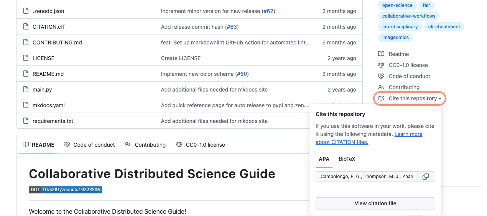

GitHub Repo Guide¶
Just joining or starting a new project and need a repository to store your work? You've come to the right place! Below we have compiled guidance on conventions and best practices for maintaining a shared (or shareable) repository of your work.
Setting up a New Organization Repository¶
Note
We recommend doing development in a public repo, or at least publishing the repo in which development was done at the time of publication/release. However, if you're looking to have a public-facing repo and a private repo for development, please be sure to read our guidance on the Two Repo Problem before proceeding.
Standard Files¶
For each repository, include the following files in the root directory as soon as possible; they can (and should) be instantiated when you create a new repository.
More recommendations are discussed below.
Pro tip
All these files, plus more essential and recommended elements for a comprehensive GitHub repo, are included in our Code Checklist. Following the checklist ensures compliance with the FAIR Principles for research software.1
README¶
The README.md file is what everyone will notice first when they open your repository on GitHub. When creating your repo be sure to include a brief description, as this will populate the About field in the top right of your repo, as well as start your README with some text.
Once you've created your repo, populate your README (you can do this by clicking on the file README.md, then clicking the pencil at the top left to edit). Editing your README in the browser allows you to preview the formatting of the file before committing changes. The content of your README may vary based on the purpose or goal of your repo, but there are key elements that should always be included.
Guiding Principles¶
While crafting your repo, keep the following guiding principles in mind:
- It is iterative; it does not need to be perfect from the beginning. Be honest about the scope and maturity of the project.
- It should be useful for the intended audience and optimized for scanning.
- Give the audience "quick wins" to being productive with minimal examples or typical workflows rather than comprehensively covering every edge case.
Key Elements¶
Following the above principles, be sure to include
- Summary of the repo:
- This could be a simple explanation of what the package or tool developed in your repo is intended to do,
- Or an abstract describing your research.
- Detailed documentation on how to access and use the project software (User Guide).
- Including installation of dependencies.
- If your tool requires input be in a particular format, this would be included in the README. It would also help to include an example file demonstrating the format.
- Information about the sources you've used (links and what they were used for), such as:
- Tools from other repos.
- Data used for analysis.
Examples¶
Some Imageomics repositories with nicely formulated READMEs are...
- BioCLIP 2: a large project which includes data, model, the code, and a demo.
- It also builds on previous work; the repo models how to request citations (including references), and addresses the case of a multi-user/group license; this complexity is handled well through clarification of type and the inclusion of a
HISTORY.mdfile. - It also is re-used a lot within Imageomics as a base style.
- It also builds on previous work; the repo models how to request citations (including references), and addresses the case of a multi-user/group license; this complexity is handled well through clarification of type and the inclusion of a
- cautious-robot and pybioclip (before the addition of a MkDocs site for documentation) are good examples of code or software-based projects.
- We want to emphasize that a project can start with a well-documented README and later grow to incorporate a documentation site as it becomes more complex (e.g., pybioclip).
For more inspiration on making an awesome README, check out this crowd-sourced list of awesome READMEs.
LICENSE¶
1. Select a license¶
Alongside the appropriate stakeholders, select a license that is Open Source Initiative (OSI) compliant.
Remember
A public repository on GitHub with no license can be viewed and forked by others under GitHub's ToS, but unless the author associates a license, it is unclear what others are allowed to do with it legally. Adding an OSI license can help others feel comfortable contributing!
For more information on how to choose a license and why it matters, see Choose A License and A Quick Guide to Software Licensing for the Scientist-Programmer by A. Morin, et al.
2. Add LICENSE.md to the repository¶
Once a license has been chosen, add a LICENSE.md file to the root of the repository. An easy way to do this is using a GitHub-provided license template. Do not forget to update necessary fields in the template.
GITIGNORE¶
The .gitignore file is an important tool for maintaining a clean repository by ensuring that git will not track temp files of any and all your collaborators (no pesky pycache or .DS_Store files floating around).
GitHub has premade .gitignore files which can be selected from a dropdown when creating a repo. They are available for review at github/gitignore and are generally tailored to particular languages (e.g., R or Python), operating systems, etc. The initial choice can be updated as needed. In particular, we recommend selecting a template based on the primary language used for your work.
If you or anyone on your team uses a Mac (or if you intend to encourage outside collaboration on this repo), add
at the end of the .gitignore file.
Software Requirements File¶
It is also advisable to include a machine-readable file with minimal software requirements for your project. For Python projects, this often takes the form of a requirements.txt file containing the packages and their versions that were used (e.g., pandas==2.0.1). If you use conda, you may instead opt for an environment.yml. These are essential to ensuring the reproducibility and interoperability of your work (by yourself and others). Note that they should not be listed in the README.
For more information on managing these environments and generating such files programmatically, see the wiki entry Virtual Environments.
CITATION¶
Make it easier for people to cite your project by including a CITATION.cff file; you can copy-paste the template below.
As with journal publications, we expect to be cited when someone uses our code. To facilitate proper attribution, GitHub will automatically read a CITATION.cff file and display a link to "cite this repository". This file is also used to populate metadata fields in a Zenodo record when auto-generating a DOI. As with any other component of your project, this file may change over the project's lifespan (see Digital Product Life Cycle for details), but it should be present and updated before any release.
Providing this file is as simple as copying the below example and filling in your information before uploading it to your repo. More examples and information about the Citation File Format can be found on the citation-file-format repo, including helpful related tools.
Citation Templates¶
- When adding a DOI to your citation (
doi), be sure to use the version-agnostic DOI from Zenodo. Since the DOI is not generated until after the release, this ensures there will never be an "incorrect" DOI associated to the release—correct version reference is ensured through theversionkey, which should always be updated before generating a new release. - A
CITATION.cffis intended as a reference for your code; ask in theREADMEthat someone cites both the repo and your paper, then provide the paper BibTeX there. - Formatted display can be checked on a branch before merging to
main.
Pro tip
Pair this citation file with a .zenodo.json for easier DOI metadata tracking (grants, references, associated papers).
Warning
This is generally intended as a reference for your code. Preferred citation can be used for the paper, though it is better to ask in the README that someone cites both and provide the paper reference there (only the preferred-citation will show up to be copied from the citation box if it is included).
Simplify version tracking for you code
Pair the standard citation file with a .zenodo.json file, which can track references, associated papers, and grant information.
Info
- Subcategories of
preferred-citationdo not get bullet points, but the first subcategory ofreferencesmust be bulleted (as below). - If including
referencesor setting apreferred-citation, see this bibtex to cff crosswalk for help in translating a BibTeX citation to the properCFFformat.
Pro tip
Check whether your citation renders correctly on a branch. When you push the CITATION.cff to a branch and browse the repository at that branch, you can select "Cite this repository" in the righthand sidebar to see if it is rendering as expected:
{kind=link}
Recommended Files¶
Though the following files are not included in every repository and do not have a simple selection process integrated into GitHub, they are extremely important (if not essential) to maintaining FAIR principles and reproducibility in projects, as well as ensuring proper attribution for your work.
CONTRIBUTING¶
If you are looking to open your project to more public contributions, it is a good idea to include contributing guidelines. This could take the form of a CONTRIBUTING.md file or a subsection of your README.
Contributing guidelines are important to maintain consistency across the way people work on a project. It is important to establish conventions about the important things while avoiding excessive constraints and bureaucracy that would make contributing a pain. Important things include efficient and effective communication.
Zenodo Metadata¶
When using the Zenodo-GitHub integration for automatic DOI generation, tracking metadata beyond the basics (authors, keywords, title, etc.) requires manual updates to the Zenodo record. The solution for this is to include a .zenodo.json file to keep track of this information (e.g., grant funding and references).
A .zenodo.json can be created by applying cffconvert to your CITATION.cff (without the references, as these are not supported). Then add the references and other metadata back in to the JSON (following the Zenodo dev guide). Alternatively, The example below can simply be copied into a new file and updated with the appropriate information (comments should be removed prior to upload).
Note
The publication_date and version will need to be updated along with the CITATION.cff for each release.
{
"creators": [
{
"name": "family-names, given-names",
"orcid": "", // Just the ORCID number, not the URL
"affiliation": ""
},
{
"name": "family-names, given-names",
"orcid": "",
"affiliation": ""
}
],
"description": "", // Ex: abstract from the citation, HTML can be used for formatting
"keywords": [ // Add the same list of keywords as in your CITATION.cff
"imageomics"
],
"title": "<repo title>",
"version": "<release version>",
"license": "<license>", // Check docs for codes: https://developers.zenodo.org/#representation
"publication_date": "YYYY-MM-DD",
"grants": [
{
"id": "021nxhr62::2118240" // Imageomics (<NSF code>::<Imageomics Grant #>)
},
{
"id": "021nxhr62::2330423" // ABC NSF grant, NSERC requires manual update
}
],
"references": [
// list of references as strings in APA or similar format
]
}
Example .zenodo.json
The Zenodo JSON for BioCLIP 2 provides an example that includes a grant, references, and an associated paper (related_identifiers), which is also listed under notes for additional citation. We also recommend including this format validation workflow, which will run if either the .zenodo.json or the workflow itself is edited.
Additional Considerations¶
Formatting and Naming Conventions¶
Dates and Times¶
For interoperability and to avoid ambiguity, dates and times should be reported in ISO 8601 format.
- For dates, this means
YYYY-MM-DD(for ISO 8601 compliance, the dashes are required). - For times, use
THHMMSSin 24-hour format. - For example, the moment when there were 60 seconds left before New Year 2000 would be
1999-12-31T235900.
Branches¶
- Primary branch:
main - Other branches follow the pattern
category/reference/description:- category:
feature,bugfix,experimentfeatureis for new functionalitybugfixis for fixing errorsexperimentis for more open-ended work
- the associated issue (if no issue, put
no-ref), formatted asissue-NN - description: brief description, e.g.,
solve-world-hunger
- category:
- Example:
git branch feature/issue-1/general-ai
Commits¶
To combine human- and computer-readability into commit messages, follow the Conventional Commits specification.
Workflow¶
Do not conduct routine work in the main branch. Only do one thing on a branch at a time. Prune a branch once its purpose is fulfilled and it is merged (i.e., delete it).
For more information on creating, merging, and deleting branches, see the GitHub Workflow Guide.
General Repository Structure¶
In addition to the standard files recommended for every repo, you will likely have some code, notebooks, and data. For an easily accessible and readable repo, it is good to organize these files within a clear directory (folder) structure, such as
Note
Depending on the size of your data, data may only be local on your machine in which case it is good to include instructions to access the data where appropriate.
Working on GitHub¶
After the initial creation of a repo on the GitHub website, there are two primary modes of interacting with it.
-
Through git on the Command Line
This requires a
bashorzshshell on your computer. On Mac you can use terminal, while Windows requires installing git and a bash emulator. -
Through the GitHub Desktop App, GitHub Desktop
GitHub provides documentation to get started on Mac or Windows, as well as extensive documentation on use cases we discuss throughout the wiki GitHub's Guide to contributing and collaborating using GitHub desktop.
Note
The bulk of our step-by-step guides will outline interaction through the command line, but the same principles apply to using GitHub Desktop.
Cloning a Repository¶
Navigate to the main ("<> Code") page of your repository and click the green button at the top right corner (as shown below) and copy the link (for command line) or select "Open with GitHub Desktop". For command line interaction, navigate within the bash shell to the directory where you would like to place your local copy of the repo (cd <folder_name>), then clone the repo into that folder (git clone <repo_url>), this will generate a local copy of the repo on your computer.
{kind=link}
If you would like a specific branch, use git clone -b <branch_name> <repo_url>.
Workflow Summary¶
Generally, repositories are organized around an Imageomics Project/Topic/Team, e.g., butterflies. These broader topics may contain various projects organized under a GitHub Team focused on that topic. Both projects and repositories may be linked to teams, providing an organizational structure upon which to plan and manage tasks while maintaining a clear link/connection to the work being done on those tasks. Note that a project may encapsulate multiple repositories just as a repository may be referenced by multiple projects.
Ideally, each task will be linked to an issue in the relevant repository. Team members may then be assigned tasks, and asynchronous discussions about the task can be recorded on its issue page in the repository. To accomplish the task, a new branch should be created following the branch naming conventions; do not work directly on the main branch. Once the task is completed, a pull request can be opened to merge the changes into the main branch (see the GitHub Workflow Guide and the PR Guide for more details on this process). Reviewers may be assigned to each pull request to ensure compatibility and that the proposed solution functions as expected/needed; this is an opportunity for more dialogue.